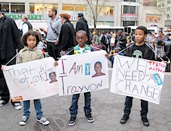
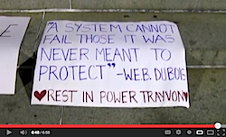
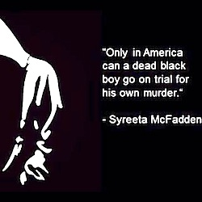
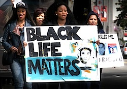
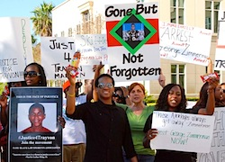

Friends,
We are shocked and heartbroken at the announcement this weekend of the acquittal verdict that absolved George Zimmerman for the murder of Trayvon Martin.
We are stunned and appalled that the human rights of people of color are still questionable in this 50th anniversary year of the March on Washington. How is it possible in 2013 for an unarmed, unassuming human being on a residential U.S. street to not only be shot to death -- a tragic fact of life for so many young men of color in our communities -- but moreover for a jury to justify his death?
Clearly we recognize that black men have been stereotyped as hostile for centuries, and this Saturday's verdict by six women, none of whom are black, replicates that historic pattern. Still, we remain shocked, for individuals, faith communities, and community groups nationwide had cried out against the racism personified by George Zimmerman's violent actions and Florida police's use of the state's cynical "Stand Your Ground" law to delay his arrest for two months. The swell of anger and anguished outcry reverberated so loudly that it was possible for us to believe that today's interpreters of the law might hold Zimmerman accountable.
Instead, the jury sanctioned the killing of an African-American youth by a white man of Latino heritage. Six jurors have rationalized and excused the racial profiling and murder of an innocent black man.
We have seen this before.
It was exactly a half-century ago when Martin Luther King, Jr. wrote, in Why We Can't Wait: "Where, in the days of slavery, social license and custom placed the unbridled power of the whip in the hands of overseers and masters, today -- especially in the southern half of the nation -- armies of officials are clothed in uniform, invested with authority, armed with the instruments of violence and death and conditioned to believe that they can intimidate, maim or kill Negroes with the same recklessness that once motivated the slaveowner."
Today, however, in the era of the first African-American presidency, many argue the United States is a "post-racial" society and employs a "colorblind" justice system. (Last month, the U.S. Supreme Court strengthened this spurious viewpoint, determining that the Voting Rights Act may be dismantled; many states, especially in the South, are already rushing to do so.)
But neither the law nor public polling address the subtext of how blacks continue to be stereotyped in the United States and subjected to extraordinary punishment.
On the night of the killing, George Zimmerman called the Sanford Police Department and said, "This guy looks like he is up to no good or he is on drugs or something."
His comments echo the many facets of modern-day white supremacy: the proliferation of "Stop and Frisk" policing tactics; the racial disparities in death penalty trials; the grossly disproportionate incarceration of black men in state and federal prisons, especially due to the "war on drugs"; and indeed the slaughter of black youth in our communities by agents of the state -- from the recent police killings of Oscar Grant in Oakland, Kimani Gray in Brooklyn, Wendell Allen in New Orleans, Terrance Franklin in Minneapolis, and countless others, to the particular circumstances in which 17-year-old Trayvon Martin, a brown-skinned man walking in a "hoodie" sweatshirt, was racially profiled and murdered by a volunteer "neighborhood watch" civilian.
The blindness of the law fails to address how black bodies are associated with behavior and actions that are deemed threatening -- regardless of what blacks actually do.
Articles
The Verdict Is In: We Must Organize To Get Justice, by Chris Crass
Fighting neighborhood crime, nonviolently, by George Lakey
The (Black) Human Body: Thoughts on the Death of Trayvon Martin, by Mick Powell
An Open Letter to the Black Community From 100 Black Youth, from the Black Youth Project
So, I Ask You, What If Trayvon Martin Was Asian?, by Scot Nakagawa
Why did Marissa Alexander get a 20-year sentence despite invoking 'Stand Your Ground'?, by Morgan Whitaker
Florida 'stand your ground' law yields some shocking outcomes depending on how law is applied, by Kris Hundley, Susan Taylor Martin and Connie Humburg
Bringing Down the New Jim Crow, a radio documentary series by Chris Moore-Backman
Our Collective Imprisonment and the Revolution of Love, by Rev. Lucas Johnson
|
Trayvon Martin was not carrying a gun. He was, in fact, peacefully walking, carrying candy and iced tea, talking on his phone to a friend. It was in fact Zimmerman, acting as a "security" representative, who was the threatening and violent presence. But Zimmerman is not a black man. And now a jury has affirmed that the lethal force he used against Trayvon Martin was acceptable.
What do we tell our children?
We must first acknowledge our rage. It is true that our anger can be a powerful force for demanding action and change. Yet there is a tension between our righteous demands for justice and our desire to demonize the perpetrators.
Martin Luther King, Jr. reminds us in Strength to Love that our "enemies" -- those who do not even seek forgiveness for the evil acts they have done -- still deserve compassion. "Hate multiplies hate, violence multiplies violence, and toughness multiplies toughness in a descending spiral of destruction," Dr. King warns us.
We must realize that George Zimmerman's racist and brutal actions were not his alone, but those of a racist and brutal society -- a society that equates black bodies with violence, a society that mythologizes the use of violence to resolve conflict, a society that is addicted to guns.
So how do we hold society accountable for such racist violence?
We must work for legislative changes, including overturning the so-called Stand Your Ground laws -- also known as Shoot First laws -- which exploit racism in such a deadly manner. There are such laws in 26 states, Florida being the first to approve it in 2005. In Florida, the law has been invoked in court more than 200 times, according to a Tampa Bay Times investigation. In most cases, the person who pulled a trigger or swung a bat didn't even face trial.
Many of our allies seek to use the law again by calling for federal civil rights charges to be filed against Zimmerman. (See online petitions launched by Color of Change, NAACP, and Groundswell, for example.) We should not give up on the courts as a means to demand change; but, as this verdict shows, neither can we trust that racist violence will be effectively challenged by the judicial system.
The mass movement that began when individuals and groups all over the country cried out against the killing of Trayvon Martin is the organized confrontation to racist violence.
At the Fellowship of Reconciliation, we are inspired to recommit ourselves to the movement for racial justice through challenging the "New Jim Crow" and prioritizing the endemic violence in our nation's communities as a central focus of our peace and justice work.
Morally and ethically, we resist the current cultural norm whereby young black men are ritually stigmatized and dehumanized.
Together in coalition, at the grassroots and national levels, we must join the vanguard of the struggle for racial justice as we seek to build together the Beloved Community.
Ethan, Rima, Shauen, John, Linda, Ivan, and the team at FOR
Images, from top: Stuart Tracte, Debra Sweet, Daniela Kantorova, Suzy Subways, Africa to Gaza Aid Convoy, Greg Lilly, Werth Media (Creative Commons licenses). |